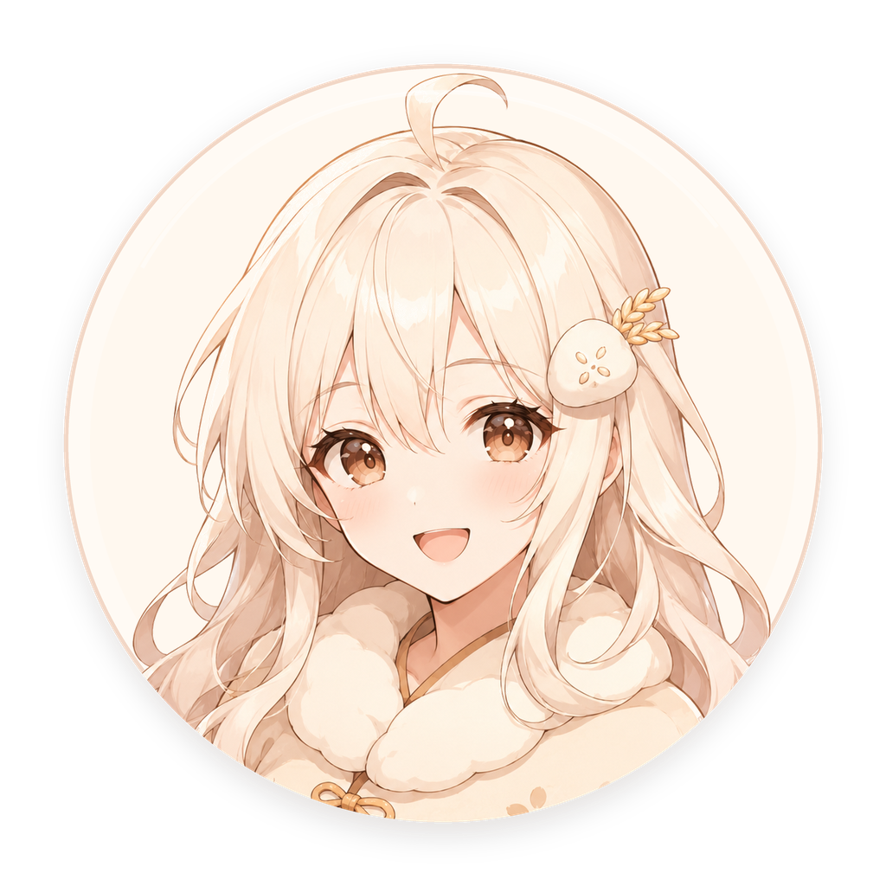
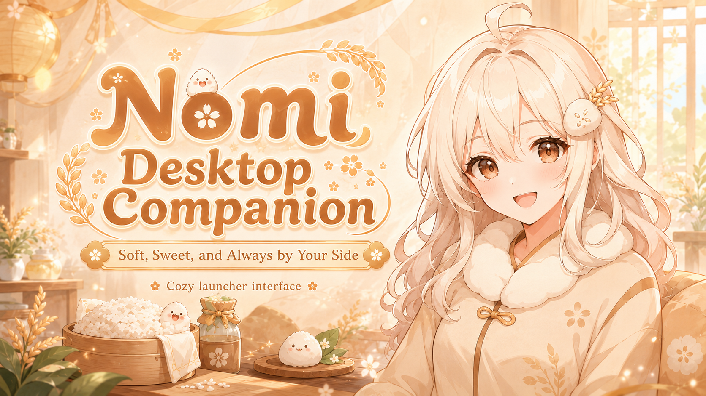

Talk about your world.
Share an idea, work through a question, or just tell her about your day. Chat in English or Chinese, with image attachments when your model supports them.
A little conversationMeet Nomi, your little AI companion. A friendly face to talk to, think with, and keep you company through the everyday.

Hey, you. How was your day? ☀
A place for your thoughts, a familiar voice, and a companion you can make your own.
Share an idea, work through a question, or just tell her about your day. Chat in English or Chinese, with image attachments when your model supports them.
A little conversationGive your keyboard a break. Speech recognition and spoken replies bring a voice to your companion, with local and online voice options.
Meet her voiceWith long-term memory enabled, details can carry into later conversations. Review, edit, or delete what Nomi remembers in settings.
Make it personalNomi stays on your desktop. Open quick chat whenever a thought comes to mind, or settle in for a longer conversation.
Illustrative interface preview · Sample content

Choose how she looks, how she sounds, and the AI behind the conversation.
Nomi brings a desktop interface, language models, speech, and memory into one companion. The work is in making those pieces live together.
An Electron app with a transparent pet window, separate chat and settings surfaces, and communication across windows.
Electron · JavaScript · IPCA shared chat flow routes requests to local or online models, adds relevant memories, and coordinates spoken replies.
llama.cpp · Python · STT / TTSFirst-launch resource setup, configurable voices, and language-aware reply segmentation connect the technical pieces to everyday use.
Resource management · i18nThis is Nomi's project showcase. A public installer is not offered on this page yet. You can explore the feature preview above without installing anything.
The desktop app currently supports Windows. This website can be viewed on both desktop and mobile browsers.
Nomi supports local language models through llama.cpp. Offline use depends on the models and voice services you choose, with resources downloaded beforehand. Online AI providers and online voice services need an internet connection.
Nomi is intended to be free to use. If you choose an external AI API, that provider may charge for usage. Local model performance depends on your hardware.